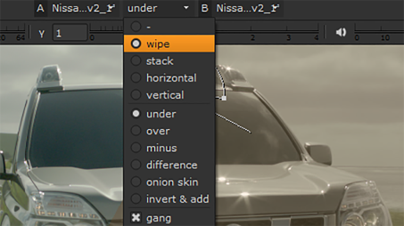

查看器 A/B 工具允许您使用两个查看器输入缓冲区快速比较媒体。选择剪辑、序列、剪辑实例或轨迹，然后按 1 或 2 将您的选择放在查看器输入缓冲区中。您还可以使用查看器热点将项目拖放到输入缓冲区中。
注意: 查看器当前将所有 alpha 通道视为预乘，这可能会导致查看器背景被 “添加” 到图像中。如果您正在处理未预乘的图像，请将查看器背景设置为 黑色 。请参阅 附录 A: 偏好 欲了解更多信息。
当查看器输入缓冲区包含序列时，A 和 B 下拉列表使用轨迹名称和标记控制查看器中显示的内容。从下拉列表中选择轨迹或标记将在查看器中显示选定的媒体。
使用 擦拭 , 堆栈 , 水平 ,和 垂直 控制缓冲区在查看器中的显示方式的模式。
注意: 如果您在多视图项目中工作，例如使用立体素材，您可以使用查看器上的 “视图” 按钮设置在 a 和 B 缓冲区中输出哪个视图。请参阅 在查看器中显示视图 欲了解更多信息。
的 擦拭 和 堆栈 模式还允许您将两个缓冲区混合在一起，在 擦拭 模式，在查看器中提供一个句柄，用于在两个输入之间快速擦除。

颜色选择器覆盖
 显示 a 和 B 输入内容的说明，或
没有剪辑
例如，当播放头没有剪辑时，当时间线中有间隙或轨道被禁用时。
显示 a 和 B 输入内容的说明，或
没有剪辑
例如，当播放头没有剪辑时，当时间线中有间隙或轨道被禁用时。

覆盖中的橙色三角形表示当前在查看器中提供音频和时间码信息的剪辑。
|
|